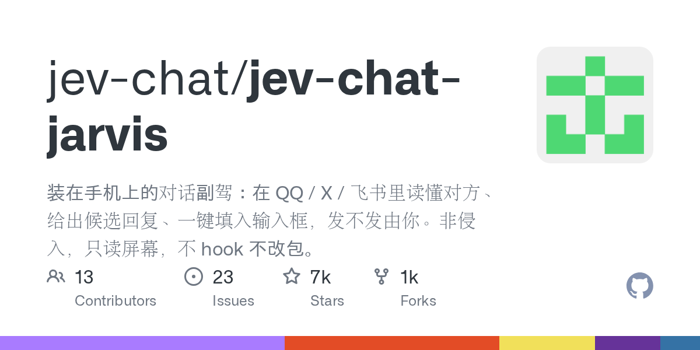

03 GitHub
jev-chat/jev-chat-jarvis
휴대폰 채팅에 답장 후보를 띄우는 보조 앱
★ 7,109이번 주 +2,609KotlinMIT 사내 사용 가능릴리스 v1.4 (09.23)최근 활동 09.29테스트 없음예제 없음AGENTS.md 없음

이 저장소는 모바일 메신저 대화를 보조하는 앱을 내세운다. 만든 쪽은 채팅 화면을 읽고 상대 의도와 위험 정도를 먼저 판단한 뒤 답장 후보를 준다고 적었다. 자동 전송은 하지 않고, 입력칸에만 채워 넣는다. 개인정보와 외부 전송 경계도 비교적 자세히 밝혀 둔 편이다.
무엇을 하는 물건인가
이 앱은 휴대폰 채팅 화면을 읽고 답장 후보를 보여 주는 안드로이드 보조 도구다. 이 도구가 없으면 대화 의도와 위험 신호를 사람이 직접 읽고, 답장 문구도 스스로 떠올려 써야 한다. 프로그램은 답장을 입력칸에만 넣고, 전송은 사용자가 직접 누른다. 창을 넘겨 보며 맥락을 짚고 답장을 다듬던 일을 화면 위 작은 패널로 줄여 준다.
스펙과 도입 조건
- 언어는 Kotlin이다.
- 안드로이드 앱이며 Android 11 이상에서 동작한다.
- 지원 아키텍처는 ARM64와 arm64-v8a다.
- 서명된 APK를 제공한다.
- 접근성 권한과 화면 위 표시 권한이 필요하다.
- 자동 시작과 절전 예외 설정이 필요할 수 있다. 특히 Xiaomi와 HyperOS에서 그렇다고 적혀 있다.
- 외부 API 키가 필요하다. 판단, 답장, 시각 인식용 인터페이스를 따로 넣을 수 있다.
- 한 개의 키만 넣어도 나머지 설정이 이를 이어받을 수 있다.
- 라이선스는 MIT다.
- 최신 릴리스는 v1.4이며 공개 시점은 2026년 9월 23일이다.
이럴 때 쓰면 좋다
- 고객 문의를 모바일 메신저로 받는 팀이 급한 메시지와 위험 신호를 먼저 가려 보고 답장 초안을 얻고 싶을 때 쓸 수 있다.
- 영업 담당자가 외부 메신저 대화에서 상대 의도와 적정 응답 시점을 빠르게 판단해야 할 때 도움이 된다.
- 야간 당직자가 사내 메신저나 외부 채팅을 휴대폰으로 확인할 때, 짧은 후보 답장을 받아 먼저 대응할 때 유용하다.
핵심 기능
- 상대 의도, 위험 등급, 즉시 답변 필요 여부를 먼저 판단한다.
- 말투가 다른 답장 후보 3개를 만들고 적합한 순서로 정렬한다.
- 지원 앱에서 대화를 읽고, 본문이 보이지 않으면 기기 안 OCR로 글자를 인식한다.
왜 지금 주목받나
대화 보조 도구는 답장 문구만 바로 만드는 경우가 많다. 이 저장소는 답장을 만들기 전에 상대 의도와 위험 등급부터 판단한다고 밝혔다. 자동 전송을 하지 않고 입력칸만 채우는 점도 분명히 적었다. QQ와 X는 전체 흐름을 지원하고, Feishu는 OCR 보완 방식으로 처리한다.
저장소 설명에는 판단용, 답장용, 시각 인식용 인터페이스를 따로 설정할 수 있다고 적혀 있다. 화면 속 스크린샷은 기기 안에서 OCR로 처리하며 업로드하지 않는다고 밝혔다. 다만 분석을 실행하면 현재 대화 글과 켠 배경 정보, 기록이 사용자가 고른 외부 모델 사업자로 전송된다. 보안 관점에서는 이 전송 경계가 도입 판단의 핵심이다.
| 플랫폼 | 상태 | 수집 방식 | 비고 |
|---|---|---|---|
| QQ Android | ✅ 전체 흐름 | 접근성 노드 읽기 | 9.3.50 실기기 검증, 그룹 대화 |
| X / Twitter DM | ✅ 전체 흐름 | Compose 노드의 content-desc 해석 | 12.25 실기기 검증, 중국어 화면 |
| Feishu / Lark | ✅ OCR 보완 | 기포 사각형 + ML Kit 오프라인 OCR | 본문이 접근성 트리에 없음 |
| 기타 미지원 앱(위챗 제외) | ✅ 수동 | 한 번 스크린샷 인식 | 자동 아님, 화자 구분 안 함 |
| 웹 | ⏳ 계획 | — | 웹 버전 없음 |
사내 도입 체크
- 외부 API 호출은 있다. 분석 시 현재 대화 글과 켠 배경 정보, 기록이 사용자가 지정한 모델 사업자로 전송된다.
- 데이터 반출 가능성은 높다. 스크린샷은 기기 안에서만 처리하지만, 텍스트와 배경 정보는 외부로 나갈 수 있다.
- 유지보수 주체는 jev-chat 조직과 기여자로 보인다.
- 상용 제품 대체 여부는 확인 필요다. 다만 모바일 채팅 답장 보조라는 용도는 분명하다.
주요 용어
원문 정보
제목: jev-chat/jev-chat-jarvis
최근 활동: 2026.09.29